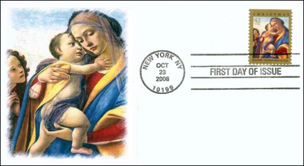
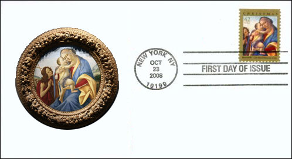

Working from a detail of a painting titled “Virgin and Child With the Young John the Baptist” by the Italian master Sandro Botticelli, designer Richard Sheaff of Scottsdale, AZ, created the Postal Service’s 2008Christmas stamp.

The painting, tempera and oil on wood, dates to around 1490 and is now in the collection of the Cleveland Museum of Art. It presents one of the most common figural groups in religious art. Botticelli’s beautifully rendered figures capture the tender relationship between mother and child and at the same time suggest Mary’s foreknowledge of Christ’s fate.

The facial expression of John the Baptist, seen standing to the side in a prayerful gesture, also suggests a heightened awareness. © 2007 USPS. All Rights Reserved.
Notes:
- In order to make the picture rectangular, the designer had to add some sky in the corners
- The image of St. John was clipped a lot
- My picture shows very similar colors when compared with the zoomed stamp
- The big image of the stamp looks much more sharper than the original painting, probably because it will appear then on a rather small stamp.Links:
- Botticelli at Uffizi Gallery, Florence - 1
- Botticelli at Uffizi Gallery, Florence - 2
- Christmas Art - 2008